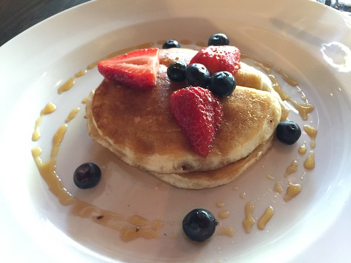

Pancakes recipe
Ingredients
- 1½ cups all-purpose flour
- 3½ teaspoons baking powder
- 1 egg
- 1 tbsp cup Monkfruit sweetener, or sugar
- ¼ teaspoon salt, or more to taste
- 1¼ cups milk
- 3 tbsp butter, melted
- 1 tbsp chocolate chips, if desired
Instructions
- In a large bowl, sift together the flour, baking powder, salt and Monkfruit sweetener. Make a well in the center and pour in the milk, egg and melted butter; mix until smooth.
- Heat a lightly oiled griddle or frying pan over medium-high heat. Place some butter on the pan, let it melt. Then pour or scoop the batter onto the griddle, using approximately 1/4 cup for each pancake. Brown on both sides and serve hot.